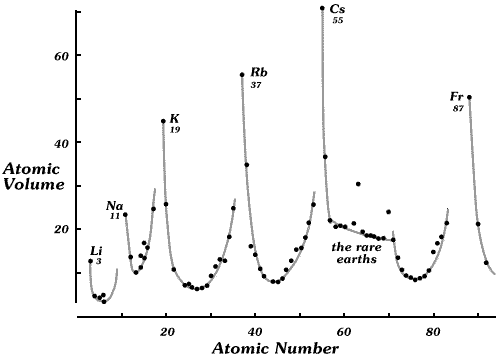

Reports present information in three main ways — tables, graphs and text.
Textual descriptions
Paragraphs of text are rarely adequate descriptions of the information in data
on their own. Graphical and tabular displays invariably convey information much
more clearly and in a much more immediate and memorable way. However graphics
and tables must be integrated into a report, and there is definitely a place for
text to describe the source and background of the data and to summarise the notable
features of the display.
Text should be used to summarise and interpret information in tables and graphs,
but not to simply repeat in words information that has already been clearly presented
in another form. Such repetition tends to obscure rather than inform.
Tables
Tabular displays are often effective summaries of very simple data sets. For
example, the following table describes the New Zealand defence force personnel
in 2005 as concisely as any graphical display.
| |
Count |
Percentage |
| Navy |
1,910 |
22% |
| Army |
4,438 |
52% |
| Air force |
2,266 |
26% |
| Total |
8,614 |
100% |
For a very non-technical audience however, a pie chart may be preferred.
Larger tables can concisely present a lot of detailed information to the reader.
However the danger is that the ‘broad picture’ is often obscured by
the detail — it is hard to see the wood for the trees. There is often a way to
display the data graphically that makes the 'signal' in the data more prominent.
Large tables should usually be summarised briefly in the body of a report with
the full table relegated to an appendix or made available for download from a
web site. In particular, the availability of large tables of raw data on a web
site may make it easier for technically able readers to do further analysis of
the data.
Graphical displays
Graphical displays such as bar charts, pie charts, histograms, maps and scatter
plots are particularly effective ways to convey information since the human eye
can readily detect, interpret and retain patterns. There are many further ways
to graphically display information.
What is it that makes a statistical display of data excellent? There is no
better discussion of this than in Tufte’s book, “The Visual Display
of Quantitative Information”. You are encouraged to examine the many examples
of the art which are shown in that text. To quote Tufte,
Excellence in statistical graphics consists of complex ideas
communicated with clarity, precision and efficiency.
Even simple ideas need to be presented with that same clarity, precision and
efficiency. Any statistical graphic should show the data efficiently and truthfully,
should not distort the information in the data and should be closely integrated
with numerical and verbal descriptions of the data.
Annotation
A good graphical or tabular display can often ‘speak for itself’
— its message is immediately clear without further explanation. However it often
helps to write comments on a diagram (a) to point out important features and (b)
to add extra information such as labels that give extra insight. Two examples
of annotated graphics are shown below.
Atomic weight and volume
The following diagram was printed in Tufte's book. The added text and grey
lines on the scatterplot help to highlight the periodicity of properties of chemical
elements. A brief textual commentary in the main text would also help.

Life expectancy and income
The scatterplot below shows the life expectancy and gross national income (GNI)
per capita in all countries in 2004. The annotation highlights seven countries
whose life expectancy is much less than would be expected from their GNI and gives
an explanation. It also labels the country with the highest GNI per capita and
the caption summarises the relationship in words.